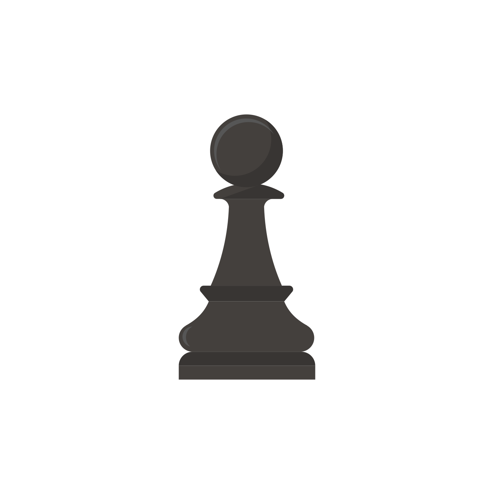

Infantry tactics

La infantería es la espina dorsal de la mayoría de ejércitos, una espina que si se rompe nos deja vulnerables. Una manera sencilla de calcular si una unidad de infantería va a perder en el cuerpo a cuerpo contra otra es comparando su coste: las unidades caras vecen a las baratas. Cuando el precio de las unidades no es muy distino, entran en juego otros factores; explotarlos suele ser clave para ganar batallas contra otros jugadores.
Más allá de lo obvio, hay algunos detalles más sutiles a tener en cuenta para usar bien a la infantería:
- Las unidades tienen distinta masa según su armadura y entrenamiento, pero ésta no es demasiado importante a la hora de combatir contra otra infantería. En cambio, la masa se vuelve más relevante contra caballos, elefantes, carros, (monstruos)... Cuanto más masiva sea una unidad, mejor aguantará las cargas y menos daños sufrirá.
- La bonificación por carga es un punto determinante para el resultado de un combate entre infantería. Es el motivo por el que los bárbaros pueden aplastar las legiones romanas. Tenlo en cuenta, aprovecha la bonificación de carga de tus unidades más salvajes con cargas limpias y protégete de las cargas de las unidades más duras del enemigo.
- Hay dos tipos de daño, el daño básico y el daño por penetración. El daño por penetración ignora la armadura del enemigo. Así de simple. Escoge bien tus armas dependiendo de tu enemigo. Si te enfrentas a enemigos muy acorazados, agarra el hacha. Si te enfrentas a celtas drogados desnudos, una espada te vendrá mejor.
- Los números importan. Una unidadad que tiene enemigos delante y a los lados sufrirá muchas más bajas porque le lloverán palos desde muchas direcciones y habrá hombres (o mujeres) que tendrán que pelear contra varios enemigos a la vez.